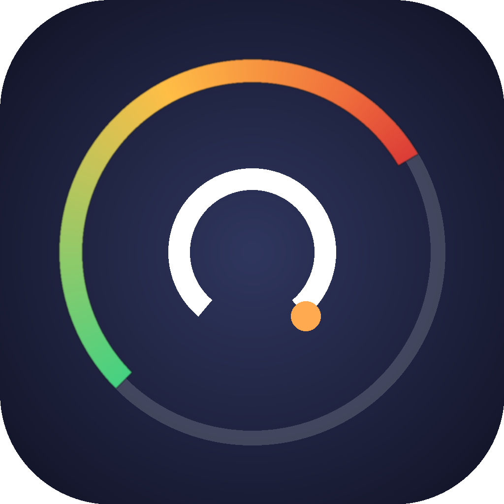

ClaudeStatsA native macOS menu bar app that reads your real Claude Code subscription usage — with pace-aware indicators, a desktop overlay, usage history heatmaps, a global hotkey, and a right-click context menu. Built with NSStatusItem for pixel-perfect rendering.
macOS 14 Sonoma or later · ~1 MB · Open source (MIT)
Customizable glyphs for under, on, and over pace. Choose from 30+ SF Symbols. Rendered as native template images via NSStatusItem for pixel-perfect icon centering.
Percentages come directly from Claude's own /usage endpoint — same numbers the /usage page shows. No guessing, no local approximation.
Pin a translucent, non-interactive widget to any corner of any screen. Includes pace bars, activity heatmap, and a watermark glyph. Dock-aware positioning.
GitHub-style contribution grid, 7-day bar chart, and streak tracker. All from local JSONL logs — no extra endpoints. Cached for instant display.
Set a keyboard shortcut to toggle the popover from anywhere. Uses Carbon RegisterEventHotKey — no Accessibility permissions required.
SwiftUI + AppKit (NSStatusItem + NSPopover), no Dock icon, no telemetry, no Electron. Signs in via Google or email. Right-click context menu. Everything stays on your Mac.
Menu bar display mode (% used, % remaining, time to reset, icon only), compact mode, custom pace glyphs, overlay position, monitor selector, and more.
See how your usage splits across Opus, Sonnet, and Haiku — parsed from local Claude Code session logs with billable-token weighting.
Checks GitHub Releases for updates. One-click install & restart in place — works from /Applications/ or anywhere else. Optional auto-check at startup.
Three steps, and you're live.
Download & unzip
Grab the latest release and drag ClaudeStats.app into /Applications/.
First launch
Right-click the app, then Open, then Open in the Gatekeeper dialog. Only needed once (the app is ad-hoc signed).
Sign in to Claude.ai
Click Settings in the popover. Sign in with Google (opens your default browser), email (embedded window), or paste your sessionKey cookie manually.